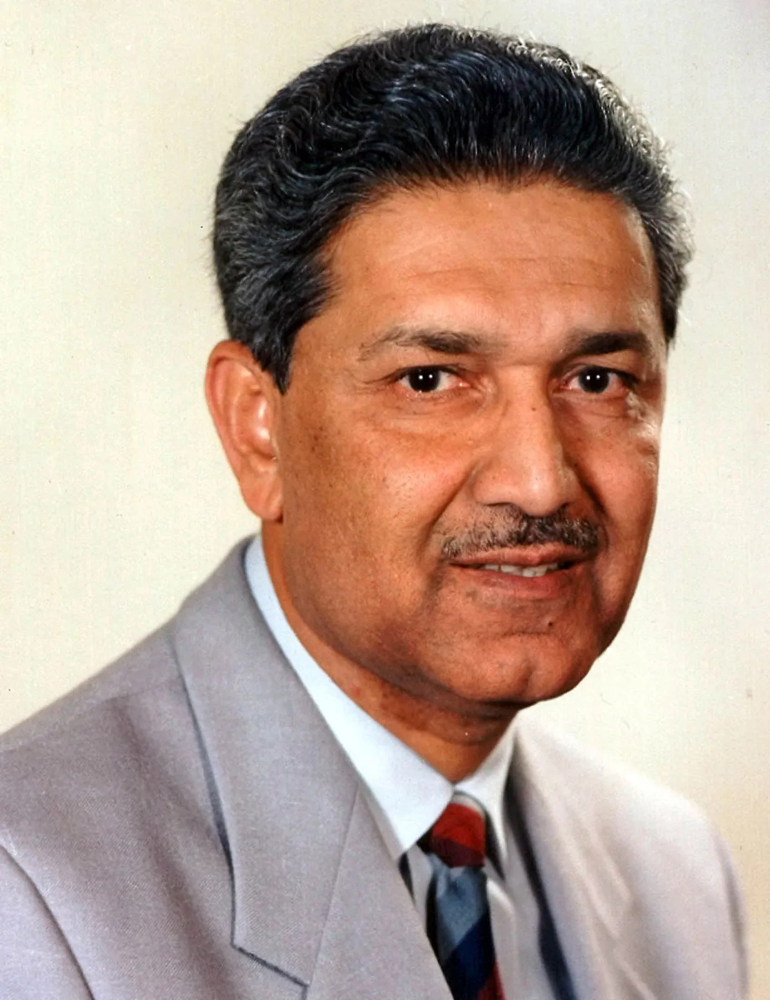

Dr. Abdul Qadeer Khan
1936 - 2021
Missile Man Of Pakistan
Abdul Qadeer Khan[a] NI & BAR, HI, FPAS (1 April 1936 – 10 October 2021)[3] was a Pakistani nuclear physicist and metallurgical engineer. He is colloquially known as the "father of Pakistan's atomic weapons program".[b] A Muhajir emigrant from India who migrated to Pakistan in 1952, Khan was educated in the metallurgical engineering departments of Western European technical universities where he pioneered studies in phase transitions of metallic alloys, uranium metallurgy, and isotope separation based on gas centrifuges. After learning of India's "Smiling Buddha" nuclear test in 1974, Khan joined his nation's clandestine efforts to develop atomic weapons when he founded the Khan Research Laboratories (KRL) in 1976 and was both its chief scientist and director for many years.
Biographies
- Birth: April 1, 1936, in Bhopal, British India (now Madhya Pradesh, India).
- Migration: Emigrated from India to Pakistan as a Muhajir in 1952.
- Education: Graduated from the University of Karachi in 1960 and pursued metallurgical engineering at technical universities in Germany, the Netherlands, and Belgium.
- European Work: Worked at the Physical Dynamics Research Laboratory in the Netherlands and the URENCO Group, where he acquired critical centrifuge uranium enrichment knowledge.
- Atomic Bomb: After India's 1974 "Smiling Buddha" nuclear test, Khan wrote to Pakistan's Prime Minister Zulfikar Ali Bhutto, offering his expertise to help develop an atomic bomb
- Founding ERL: Returned to Pakistan in 1976 and founded the Engineering Research Laboratories (ERL), which was later renamed the Khan Research Laboratories (KRL) in Kahuta.